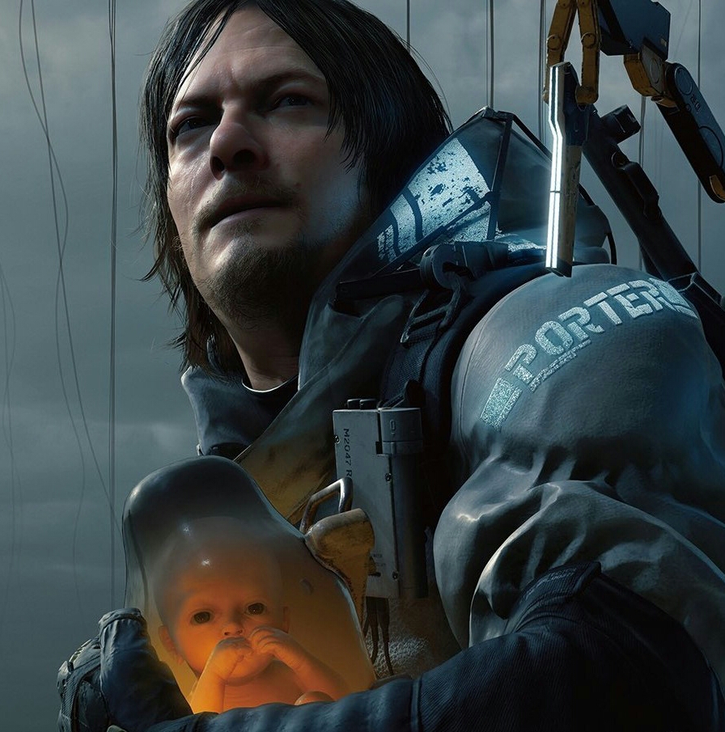

У матери Сэма, Лизы Бриджес, на седьмом месяце беременности умер мозг. Её гражданский муж Клиффорд Унгер, не зная, как спасти её и своего нерождённого сына, отдал их в руки «Бриджес», где им пообещали помочь. На самом деле помогать им не собирались: Лиза нужна была Бриджет Стрэнд, которая в то время искала кандидатов в Бридж-Бэби. Лизе сделали кесарево сечение и поместили её в капсулу для некроматери, а её сына — в капсулу для ББ. После тестов выяснилось, что потенциал у ребёнка гораздо больше, чем у остальных кандидатов, и Бриджет решила, что он станет не простым Бридж-Бэби для обнаружения Тварей, а одной из «жертв», на которых будет строиться хиральная сеть.
Некоторое время Клифф верил, что «Бриджес» хочет защитить его жену и ребёнка, но потом его бывший подчинённый Джон Макклейн, приближённый Бриджет, рассказал ему о реальных планах организации. Тогда Клифф попытался выкрасть сына, но был загнан отрядом военных и застрелен вместе с ребёнком.
Душа Сэма попала на Берег, где её нашла Амелия. Она решила, что он больше не должен страдать, и оживила его, тем самым открыв путь с Берега в мир живых. Через некоторое время в мир живых прорвались множество душ мертвецов из загробного мира, и случился Выход смерти.